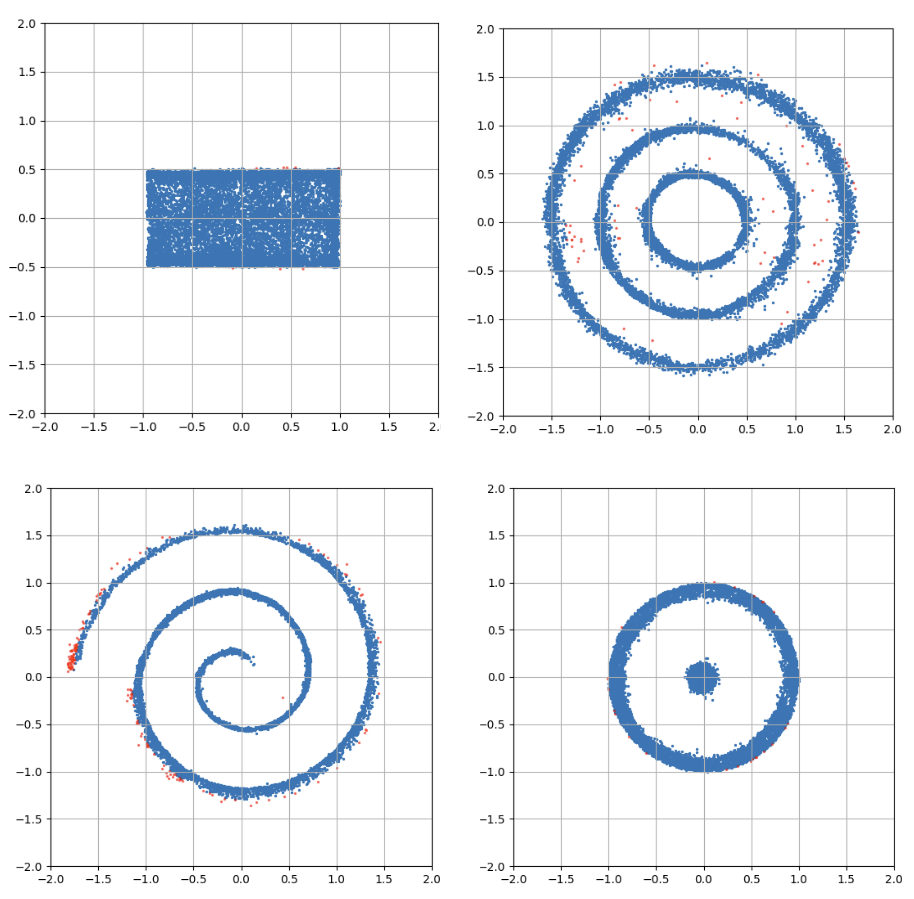

Hello! I'm Tilman, a Master's student in Computer Science at the Technische Universität Berlin. I'm interested in robotics, machine learning, optimization and discrete mathematics. I am currently working as a student research assistant at the Learning and Intelligent Systems Lab at TU Berlin. I finished my bachelor of mathematics in 2023. I wrote my thesis on topology titled "Filtrierung und Homologie von Simplizialkomplexen" under the supervision of Prof. Dr. Michael Joswig. It was recognized with an award for outstanding bachelortheses by the Berliner Mathematische Gesellschaft.
Tilman Burghoff, Cornelius V Braun, and Marc Toussaint
[Paper]
Presented at 2nd German Robotics Conference (GRC), Extended Abstract
